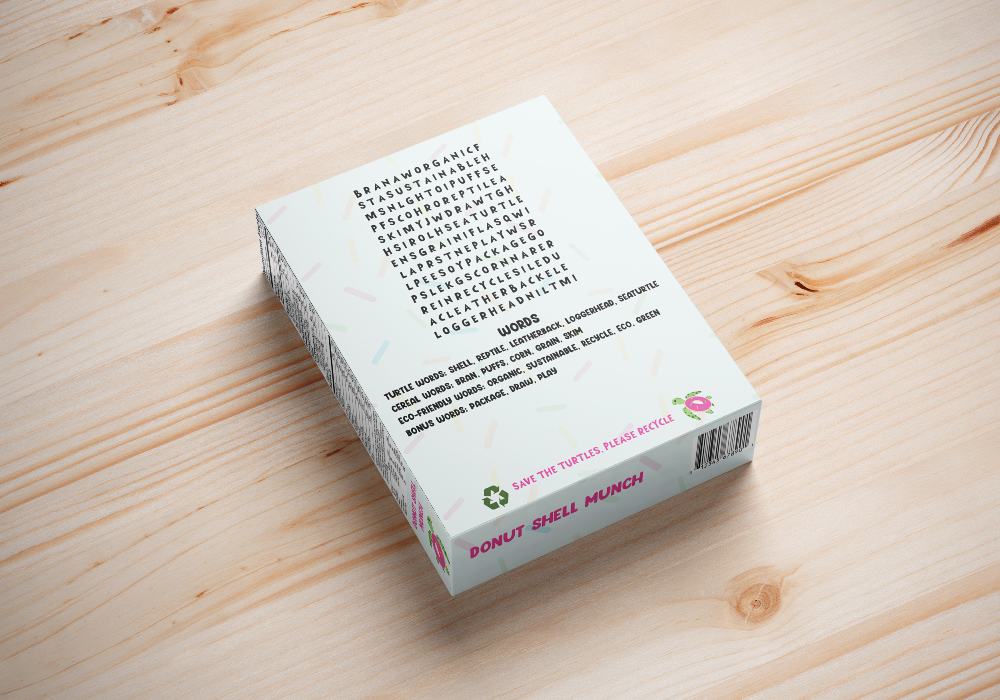

Donut Shell Munch Cereal Box

For my first packaging assignment I chose to create my own cereal box. This project has been one of my favorites so far because we had creative freedom in what kind of package to make and everything about the design. First we had to find a dieline for the box itself and then go from there with designing it. I chose to create my cereal mascott of a turtle with a donut shell and then go from there with having a donut cereal. I wanted to make it very appealing to kids with bright fun colors and graphics, as well as include a fun word search on the back. My idea with this package also was to have it be made of recycled cardboard to be eco-friendly to obviously "save the turtles." Once I was done designing I got to print, cut, and tape my cereal box together to see what it would look like.

